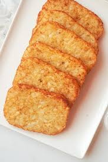

Hashbrown

Description
Hashbrowns are a popular breakfast dish made from grated or shredded potatoes that are pan-fried until golden brown and crispy.
They have a savory, slightly salty flavor and a crunchy texture on the outside, with a soft, tender interior.
Ingredients
- 2 large russet potatoes
- 1 tablespoon cornstarch
- 1 teaspoon salt
- 1/4 teaspoon pepper
- Vegetable oil for frying
Steps
- Prep the Potatoes: Peel the potatoes and grate them using a box grater or food processor.
- Rinse and Drain: Rinse the grated potatoes under cold water to remove excess starch, then drain well.
Squeeze out as much moisture as possible using a clean kitchen towel or paper towels.
- Mix Ingredients: In a large bowl, combine the grated potatoes, cornstarch, salt, and pepper. Mix until well combined.
- Form Patties: Shape the potato mixture into small, flat patties, about the size of a palm.
- Heat the Oil: In a large skillet, heat about 1/4 inch of vegetable oil over medium-high heat.
- Fry the Hashbrowns: Once the oil is hot, carefully add the patties to the skillet, frying a few
at a time without overcrowding. Cook for about 4-5 minutes on each side until golden brown and crispy.
- Drain and Serve: Remove the hashbrowns from the skillet and drain on paper towels. Serve hot and enjoy!